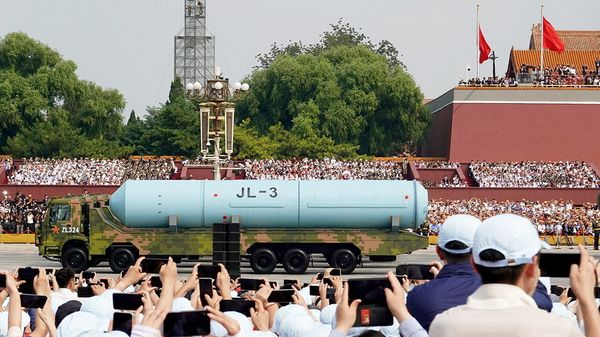

Jul 09, 2026 05:22 AM | Taipei

Secrecy is essential to the operation of submarines that bear nuclear missiles. The vessels, known as boomers, are designed to stay hidden at sea for long periods, poised to fire nuclear-armed ballistic missiles at potential foes. China, however, is especially opaque about its boomers. Although the Pentagon estimates that they have patrolled at sea for a decade, China’s government has never confirmed that. So its announcement on July 6th that one of them had carried out a rare test of an intercontinental ballistic missile in the Pacific Ocean surprised and unnerved the region.
The missile carrying a dummy warhead was fired towards international waters, said Xinhua, an official news agency, without saying where it came down. China has test-fired missiles from submarines before but usually closer to its own shores. It has tested long-range ballistic missiles over the Pacific twice before, in 1980 and 2024. Both were launched from land.
The test shows that China is “moving closer to a credible triad”, the capacity to launch long-range ballistic missiles from land, sea and air, wrote Frank Rose, a former senior official at the us National Nuclear Security Administration. Wang Qiang, a former professor at China’s National Defence University, predicted on his Weibo social-media account that by next year China would demonstrate the triad’s completion by test-firing an air-launched ballistic missile.
Foreign analysts say China is likely to carry out such tests regularly in the coming years as a way to validate the equipment involved and demonstrate resolve to America. “The United States and its allies must modernise their own deterrent capabilities and…find ways to bring arms control back into play as a tool for constraining China’s build-up,” wrote Mr Rose. China suspended nuclear-arms talks with America in 2024 in protest over arms sales to Taiwan.
The Pentagon has warned that China is expanding its nuclear arsenal and could have more than 1,000 operational warheads by 2030, compared with “the low 600s” in 2024. It is also building quieter submarines. American officials fear this is in preparation for a potential war over Taiwan that could escalate into nuclear confrontation between China and America.
The missile, which appeared to have been launched from the South China Sea and to have splashed down in the South Pacific, was likely to be a jl-2 or jl-3 (pictured), said several experts. The former has a range of about 7,200km, meaning it would have to be fired from the mid-Pacific Ocean to hit the western half of the continental United States. The jl-3 has a range of about 10,000km, allowing it to hit parts of the American mainland from Chinese coastal waters. It was on display for the first time at a military parade in Beijing last year.
China did notify some governments in the region before the latest test. Still, several voiced concern about the operation, which came on the eve of a nato summit in Ankara and in the midst of American-led joint naval exercises around Hawaii. America’s State Department said China’s “rapid and opaque nuclear-weapons build-up is of great concern”. It urged China to commit to routine notification of such launches, as other nuclear powers have. Australia’s foreign minister, Penny Wong, described the test as “destabilising”.
China is not alone in test-firing missiles from its boomers. The four other permanent members of the un Security Council—America, Britain, France and Russia—do so regularly. But, given China’s expanding nuclear arsenal and military pressure on Taiwan, this test will heighten regional fears about Chinese intentions and America’s capacity to protect its allies. ■
Subscribers can sign up to Drum Tower, our new weekly newsletter, to understand what the world makes of China—and what China makes of the world.